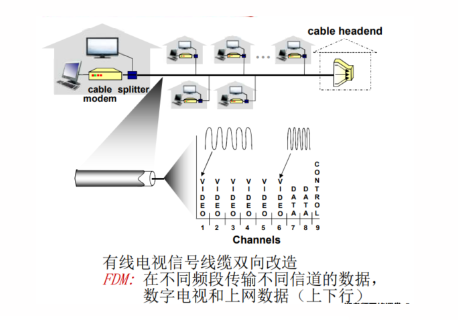
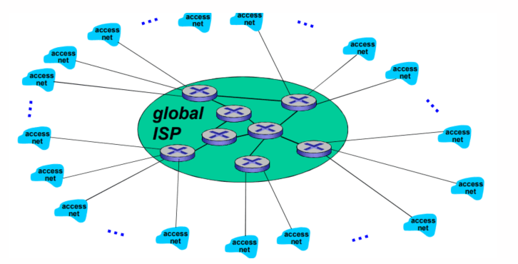

计算机网络
一些专业术语
- PDU：协议数据单元（Protocol Data Unit）是指对等层次之间传递的数据单位。物理层的PDU是数据位（bit），数据链路层的PDU是数据帧（frame），网络层的PDU是数据包（packet），传输层的PDU是数据段（segment），其他更高层次的PDU是数据（data）
第一章 计算机网络概述
1.1 什么是Internet?
1.1.1 什么是Internet：从具体构成角度
- 节点：
- 主机及其身上运行的应用程序
- 路由器、交换机等网络交换设备
- 边：通讯链路
- 接入网联路：主机连接到互联网的链路
- 主干链路：路由器间的链路
- 协议
- 数以亿计的、互联的计算设备：
- 主机 = 端系统
- 运行网络应用程序
- 通信链路
- 光纤、同轴电缆、无线电、卫星
- 传输速率 = 带宽（dps）
- 分组交换设备：转发分组（packets）
- 路由器和交换机
- 协议控制发送、接收消息
- 如TCP、IP、HTTP、FTP、PPP
- Internet：“网络的网络”
- 松散的层次结构，互连的ISP
- 公共Internet vs. 专用intranet
- Internet标准
- RFC: Request for comments
- IETF: Internet Engineering Task Force
总的来说，互联网就是分布式应用以及为分布式应用提供通信服务的基础设施
什么是互联网？
互联网就是分布式的应用进程，以及未分布式应用进程提供基础服务的设施（应用层以下全是）
1.1.2 什么是协议？
网络协议:
- 类似人类协议
- 机器之间的协议而非人与人之间的协议
- Internet 中所有的通信行为都受协议制约
协议：对等层的实体在通信的过程中应该遵守的规范的集合。
协议规范（约定）了：语法、语义、时序、动作
协议定义了在两个或多个通信实体之间交换的报文格式和次序，以及在报文传输和/或接收或其他事件方面所采取的动作
1.1.3 什么是Internet：从服务角度
- 使用通信设施进行通信的分布式应用
- Web、VoIP、email、分布式游戏、电子商务、社交网络…...
- 通信基础设施为apps提供编程接口（通信服务）
- 将发送和接收数据的apps与互联网连接起来
- 为app应用提供服务选择，类似于邮政服务：
- 无连接不可靠服务
- 面向连接的可靠服务
1.2 网络结构
- 网络边缘：
- 主机
- 应用程序（客户端和服务器）
- 网络核心：
- 互连着的路由器
- 网络的网络
- 接入网、物理媒体：
- 有线或者无线通信链路
1.3 网络边缘（edge）
- 端系统（主机）：
- 运行应用程序
- 如Web、email
- 在 “网络的边缘”
- 客户/服务器模式
- 客户端向服务器请求、接收服务
- 如Web浏览器/服务器；email客户端/服务器
- 对等（peer-peer）模式（P2P）
- 很少（甚至没有）专门的服务器
- 如 Gnutella、KaZaA、Emule
使用TCP（面向连接服务）的应用：
- HTTP (Web), FTP (文件传送), Telnet (远程登录), SMTP (email)
使用 UDP（无连接服务）的应用：
- 流媒体、远程会议、 DNS、Internet电话
1.3.1 网络边缘：采用网络设施的面向连接服务（TCP）
目标：在端系统之间传输数据
- 握手：在数据传输之前做好准备
- 人类协议中：你好、你好
- 两个通信主机之间为连接建立状态
- TCP – 传输控制协议（ Transmission Control Protocol ）
- Internet上面向连接的服务
TCP 服务 [RFC 793]
- 可靠地、按顺序地传送数据
- 确认和重传
- 流量控制
- 发送方不会淹没接收方
- 拥塞控制
- 当网络拥塞时，发送方降低发送速率
1.3.2 网络边缘：采用基础设施的无连接服务（UDP）
目标：在端系统之间传输数据
- 无连接服务
- UDP – 用户数据报协议 (User Datagram Protocol) [RFC 768]:
- 无连接
- 不可靠数据传输
- 无流量控制
- 无拥塞控制
1.4 网络核心（core）
网络核心：路由器的网状网络
- 基本问题：数据怎样通过网络进行传输？
- 电路交换：为每个呼叫预留一条专有电路：如电话网
- 分组交换：
- 将要传送的数据分成一个个单位： 分组
- 将分组从一个路由器传到相邻路由器（hop），一段段最终从源端传到目标端
- 每段：采用链路的最大传输能力（带宽）
1.4.1 网络核心：电路交换
端到端的资源被分配给从源端到目标端的呼叫 “call”：
- 图中，每段链路有4条线路：
- 该呼叫采用了上面链路的第2个线路，右边链路的第1个线路（piece）
- 独享资源：不同享
- 每个呼叫一旦建立起来就能够保证性能
- 如果呼叫没有数据发送，被分配的资源就会被浪费 (no sharing)
- 通常被传统电话网络采用
为呼叫预留端-端资源
- 链路带宽、交换能力
- 专用资源：不共享
- 保证性能
- 要求建立呼叫连接
网络资源（如带宽）被分成片
- 为呼叫分配片
- 如果某个呼叫没有数据， 则其资源片处于空闲状态（不共享）
将带宽分成片
- 频分(Frequency- division multiplexing) --- FDM
- 时分(Time-division multiplexing) --- TDM
- 波分(Wave-division multiplexing) --- WDM

计算举例
- 在一个电路交换网络上，从主机A到主机B发送一个640,000比特的文件需要多长时间？
- 所有的链路速率为1.536 Mbps
- 每条链路使用时隙数为24的TDM
- 建立端-端的电路需500 ms
- 每条链路的速率（一个时间片）：1.536Mbps/24 = 64kbps 传输时间：640kb/64kps = 10s 共用时间：传输时间+建立链路时间=10s + 500ms = 10.5s

1.4.2 电路交换不适合计算机之间的通信
- 连接建立时间长
- 计算机之间的通信有突发性，如果使用线路交换，则浪费的片较多，即使这个呼叫没有数据传递，其所占据的片也不能 够被别的呼叫使用
- 可靠性不高？
1.4.3 网络核心：分组交换

以分组为单位存储-转发方式
- 网络带宽资源不再分分为一个个片，传输时使用全部带宽
- 主机之间传输的数据被分为一个个分组
资源共享，按需使用：
- 存储-转发：分组每次移动一跳（ hop ）
- 在转发之前，节点必须收到整个分组
- 延迟比线路交换要大
- 排队时间
1.4.4 分组交换：存储-转发

- 被传输到下一个链路之前， 整个分组必须到达路由器：存储-转发
- 在一个速率为R bps的链路 ，一个长度为L bits 的分组的存储转发延时： L/R s
例如：
- L = 7.5 Mbits
- R = 1.5 Mbps
- 3次存储转发的延时= 15 s
1.4.5 分组交换: 排队延迟和丢失

排队和延迟：
- 如果到达速率>链路的输出速率:
- 分组将会排队，等待传输
- 如果路由器的缓存用完了，分组将会被抛弃
1.4.6 网络核心的关键功能
路由: 决定分组采用的源到目标的路径
- 路由算法
转发: 将分组从路由器的输入链路转移到输出链路
1.4.7 分组交换：统计多路复用

1.4.8 分组交换 vs. 电路交换
同样的网络资源，分组交换允许更多用户使用网络！
-
1 Mb/s 链路
-
每个用户：
-
活动时100 kb/s
-
10% 的时间是活动的
-
电路交换：
-
10 用户

-
分组交换：
-
35 用户时：
-
大于等于10个用户活动的概率为0.0004

分组交换是“突发数据的胜利者？”
-
适合于对突发式数据传输
-
资源共享
-
简单，不必建立呼叫
-
过度使用会造成网络拥塞：分组延时和丢失
-
对可靠地数据传输需要协议来约束：拥塞控制
-
Q: 怎样提供类似电路交换的服务？
-
保证音频/视频应用需要的带宽
1.4.9 分组交换网络：存储-转发
分组交换: 分组的存储转发一段一段从源端传到目标端，按照有无网络层的连接，分成：
- 数据报网络：
- 分组的目标地址决定下一跳
- 在不同的阶段，路由可以改变
- 类似：问路
- Internent
- 虚电路网络：
- 每个分组都带标签（虚电路标识 VC ID），标签决定下一跳
- 在呼叫建立时决定路径，在整个呼叫中路径保持不变
- 路由器维持每个呼叫的状态信息
- X.25 和ATM
1.4.10 数据报(datagram) 的工作原理
- 在通信之前,无须建立起一个连接,有数据就传输
- 每一个分组都独立路由(路径不一样,可能会失序)
- 路由器根据分组的目标地址进行路由
1.4.11 虚电路(virtual circuit)的工作原理

有点类似双向链表
1.4.12 网络分类

1.5 接入网（access）和物理媒体
Q: 怎样将端系统和边缘路由器连接？
- 住宅接入网络
- 单位接入网络 （学校、公司）
- 无线接入网络
注意：
- 接入网络的带宽 (bits per second) ？
- 共享/专用？
1.5.1 住宅接入：modem
- 将上网数据调制加载音频信号上，在电话线上传输，在局端将其中的数据解调出来；反之亦然
- 调频
- 调幅
- 调相位
- 综合调制
- 拨号调制解调器
- 56Kbps 的速率直接接入路由器(通常更低)
- 不能同时上网和打电话：不能总是在线
1.5.2 接入网: digital subscriber line (DSL)
- 采用现存的到交换局DSLAM的电话线
- DSL线路上的数据被传到互联网
- DSL线路上的语音被传到电话网
- < 2.5 Mbps上行传输速率(typically < 1 Mbps)
- < 24 Mbps下行传输速率(typically < 10 Mbps)
1.5.3 接入网: 线缆网络


- HFC: hybrid fiber coax
- 非对称: 最高30Mbps的下行传输速率, 2 Mbps 上行传输速率
- 线缆和光纤网络将个家庭用户接入到 ISP 路由器
- 各用户共享到线缆头端的接入网络
- 与DSL不同, DSL每个用户一个专用线路到CO（central office）
1.5.4 住宅接入：电缆模式

1.5.5 接入网: 家庭网络

1.5.6 企业接入网络(Ethernet)

- 经常被企业或者大学等机构采用
- 10 Mbps, 100Mbps, 1Gbps, 10Gbps传输率
- 现在，端系统经常直接接到以太网络交换机上
1.5.7 无线接入网络
- 各无线端系统共享无线接入网络（端系统到无线路由器）
- 通过基站或者叫接入点

1.5.8 物理媒体
- Bit: 在发送-接收对间传播
- 物理链路：连接每个发送-接收对之间的物理媒体
- 导引型媒体:
- 信号沿着固体媒介被导引：同轴电缆、光纤、 双绞线
- 非导引型媒体：
- 开放的空间传输电磁波或者光信号，在电磁或者光信号中承载数字数据

双绞线 (TP)
- 两根绝缘铜导线拧合
- 5类：100Mbps 以太网，Gbps 千兆位以太网
- 6类：10Gbps万兆以太网

1.5.9 物理媒体：同轴电缆、光纤
同轴电缆：
- 两根同轴的铜导线
- 双向
- 基带电缆：
- 电缆上一个单个信道
- Ethernet
- 宽带电缆：
- 电缆上有多个信道
- HFC

光纤和光缆：
- 光脉冲，每个脉冲表示一个bit，在玻璃纤维中传输
- 高速：
- 点到点的高速传输（如10 Gps-100Gbps传输速率 ）
- 低误码率：在两个中继器之 间可以有很长的距离，不受电磁噪声的干扰
- 安全

1.5.10 物理媒介：无线链路
- 开放空间传输电磁波，携带要传输的数据
- 无需物理“线缆”
- 双向
- 传播环境效应：
- 反射
- 吸收
- 干扰
无线链路类型:
- 地面微波
- e.g. up to 45 Mbps channels
- LAN (e.g., WiFi)
- 11Mbps, 54 Mbps,540Mbps…
- wide-area (e.g., 蜂窝)
- 3G cellular: ~ 几Mbps
- 4G 10Mbps
- 5G 数Gbps
- 卫星
- 每个信道Kbps 到45Mbps (或者多个聚集信道)
- 270 msec端到端延迟
- 同步静止卫星和低轨卫星
1.6 Internet结构和ISP
1.6.1 互联网络结构：网络的网络
ISP：互联网服务提供商，类似移动、电信等网络运营商
- 端系统通过接入ISPs (Internet Service Providers)连接到互联网
- 住宅，公司和大学的ISPs
- 接入ISPs相应的必须是互联的
- 因此任何2个端系统可相互发送分组到对方
- 导致的“网络的网络”非常复杂
- 发展和演化是通过经济的和国家的政策来驱动的
问题: 给定数百万接入ISPs，如何将它们互联到一起

选项: 将每个接入ISP都连接到全局ISP（全局范围内覆盖）？ 客户ISPs和提供者ISPs有经济合约

但是，如果全局ISP是可行的业务，那会有竞争者，有利可图，一定会有竞争

竞争：但如果全局ISP是有利可为的业务，那会有竞争者 合作：通过ISP之间的合作可以完成业务的扩展，肯定会有互联，对等互联的结算关系
IXP：互联网交换中心（Internet Exchange Point）是不同电信运营商之间为连通各自网络而建立的集中交换平台

然后业务会细分（全球接入和区域接入），区域网络将出现，用与将接入ISPs连接到全局ISPs
reginoal net：区域网

然后内容提供商网络 (Internet Content Providers,e.g., Google, Microsoft, Akamai) 可能会构建它们自己的网络，将它们的服务、内容更加靠近端用户，向用户提供更好的服务,减少自己的运营支出


- 在网络的最中心，一些为数不多的充分连接的大范围网络（分布广、节点有限、 但是之间有着多重连接）
- “tier-1” commercial ISPs (e.g., Level 3, Sprint, AT&T, NTT), 国家或者国际范围的覆盖
- content provider network (e.g., Google): 将它们的数据中心接入ISP，方便周边用户的访问；通常私有网络之间用专网绕过第一层ISP和区域ISPs
1.6.2 Internet结构：network of networks
松散的层次模型
中心：第一层ISP（如UUNet, BBN/Genuity, Sprint, AT&T）国家/国际覆盖，速率极高
- 直接与其他第一层ISP相连
- 与大量的第二层ISP和其他客户网络相连

-
第二层ISP: 更小些的 (通常是区域性的) ISP
-
与一个或多个第一层ISPs，也可能与其他第二层ISP

-
第三层ISP与其他本地ISP
-
接入网 (与端系统最近)

- 一个分组要经过许多网络！

- 很多内容提供商(如：Google, Akamai )可能会部署自己的网络,连接自己的在各地的DC（数据中心），走自己的数据
- 连接若干local ISP和各级（包括一层）ISP,更加靠近用户
- 经济考虑：少付费 用户体验考虑：更快
1.6.3 ISP之间的连接
- POP（邮局协议 ，用于电子邮件的接收）: 高层ISP面向客户网络的接入点，涉及费用结算
- 如一个低层ISP接入多个高层ISP，多宿（multi home）
- 对等接入：2个ISP对等互接，不涉及费用结算
- IXP（互联网交换中心）：多个对等ISP互联互通之处，通常不涉及费用结算
- 对等接入
- ICP（网络内容服务商）自己部署专用网络，同时和各级ISP连接
1.7 分组延时、丢失和吞吐量

1.7.1 四种分组延时
-
节点处理延时：
-
检查 bit级差错
-
检查分组首部和决定将分
-
组导向何处
-
排队延时
-
在输出链路上等待传输的时间
-
依赖于路由器的拥塞程度
-
传输延时:
-
R=链路带宽(bps)
- L=分组长度(bits)
- 将分组发送到链路上的时间= L/R
-
存储转发延时
-
传播延时:
-
d = 物理链路的长度
- s = 在媒体上的传播速度(~2x108 m/sec)
- 传播延时 = d/s
例子：


1.7.2 节点延时

1.7.3 排队延时

1.7.4 Internet的延时和路由

1.7.5 分组丢失
- 链路的队列缓冲区容量有限
- 当分组到达一个满的队列时，该分组将会丢失
- 丢失的分组可能会被前一个节点或源端系统重传，或根本不重传
1.7.6 吞吐量
-
吞吐量: 在源端和目标端之间传输的速率（数据量/单位时间）
-
瞬间吞吐量: 在一个时间点的速率
- 平均吞吐量: 在一个长时间内平均值


1.8 协议层次及服务模型
1.8.1 协议层次
网络是一个复杂的系统!
- 网络功能繁杂：数字信号的物理信号承载、点到点、路由、rdt、进程区分、应用等
- 现实来看，网络的许多构成元素和设备:
- 主机
- 路由器
- 各种每题的链路
- 应用
- 协议
- 硬件
例子：


层次化方式实现复杂网络功能：
- 将网络复杂的功能分成功能明确的层次，每一层都实现了其中的一个或者一组功能，功能中有其上层可以使用的功能：服务
- 本层协议实体相互交互执行本层的协议动作，目的是实现本层功能，通过接口为上层提供更好的服务
- 在实现本层协议的时候，直接利用了下层所提供的服务
- 本层的服务：借助下层服务实现的本层协议实体之间交互带来的新功能（上层可以利用的）+更下层所提供的服务
1.8.2 服务和服务访问点
- 服务(Service)：低层实体向上层实体提供它们之间的通信的能力
- 服务用户(service user)
- 服务提供者(service provider)
- 原语(primitive)：上层使用下层服务的形式，高层使用低层提供的服务，以及低层向高层提供服务都是通过服务访问原语来进行交互的----形式
- 服务访问点SAP（Service Access Point）：上层使用下层提供的服务通过层间的接口---地点：
- 例如：邮箱
- 地址：下层的一个实体支撑着上层的多个实体，SAP有标志不同上层实体的作用
- 可以有不同的实现，队列
- 例子：传输层的SAP：端口
1.8.3 服务的类型
- 面向连接的服务和无连接的服务-方式
- 面向连接的服务( Connection-oriented Service)
- 连接(Connection)：两个通信实体为进行通信而建立的一种结合
- 面向连接的服务通信的过程：建立连接，通信，拆除连接
- 面向连接的服务的例子：网络层的连接被成为虚电路
- 适用范围：对于大的数据块要传输；不适合小的零星报文
- 特点：保序
- 服务类型：
- 可靠的信息流 传送页面(可靠的获得,通过接收方的确认)
- 可靠的字节流 远程登录
- 不可靠的连接 数字化声音
- 无连接的服务(Connectionless Service)
- 无连接服务：两个对等层实体在通信前不需要建立一个连接，不预留资源；不需要通信双方都是活跃；(例：寄信)
- 特点：不可靠、可能重复、可能失序
- IP分组，数据包；
- 适用范围：适合传送零星数据；
- 服务类型：
- 不可靠的数据报 电子方式的函件
- 有确认的数据报 挂号信
- 请求回答 信息查询
- 服务与协议的区别
- 服务(Service)：低层实体向上层实体提供它们之间的通信的能力，是通过原语(primitive)来操作的；垂直
- 协议(protocol) ：对等层实体(peer entity)之间在相互通信的过程中，需要遵循的规则的集合，水平
- 服务与协议的联系
- 本层协议的实现要靠下层提供的服务来实现
- 本层实体通过协议为上层提供更高级的服务
1.8.4 数据单元(DU)
数据单元是网络信息传输的基本单位。一般网络连接不允许传送任意大小的数据包，而是采用分组技术将一个数据分成若干个很小的数据包，并给每个小数据包加上一些关于此数据包的属性信息，例如源IP地址、目的IP地址、数据长度等。这样的一个小数据包就叫数据单元。


1.8.5 分层处理和实现复杂系统的好处？
对付复杂的系统
- 概念化：结构清晰，便于标示网络组件，以及描述其相互关系
- 分层参考模型
- 结构化：模块化更易于维护和系统升级
- 改变某一层服务的实现不影响系统中的其他层次
- 对于其他层次而言是透明的
- 如改变登机程序并不影响系统的其它部分
- 改变2个秘书使用的通信方式不影响2个翻译的工作
- 改变2个翻译使用的语言也不影响上下2个层次的工作
1.8.6 Internet 协议栈
应用层
传输层
网络层
链路层
物理层
- 应用层：网络应用
- 为人类用户或者其他应用进程提供网络应用服务
- FTP, SMTP, HTTP,DNS
- 传输层：主机之间的数据传输
- 在网络层提供的端到端通信基础上，细分为进程到进程，将不可靠的通信变成可靠的通信
- TCP, UDP
- 网络层：为数据报从源到目的选择路由
- 主机主机之间的通信，端到端通信；不可靠
- IP, 路由协议
- 链路层：相邻网络节点间的数据传输
- 2个相邻2点的通信，点到点通信，可靠或不可靠
- 点对对协议PPP, 802.11(wifi), Ethernet
- 物理层: 在线路上传送bit
1.8.7 ISO/OSI 参考模型
应用层
表示层
会话层
传输层
网络层
链路层
物理层
- 表示层：允许应用解释传输的数据
- e.g：加密，压缩，机器相关的表示转换
- 会话层：数据交换的同步，检查点，恢复
- 互联网协议栈没有这两层!
- 这些服务，如果需要的话，必须被应用实现
1.8.8 封装和解封装

各层次的协议数据单元
- 应用层：报文(message)
- 传输层：报文段(segment)：TCP段，UDP数据报
- 网络层：分组packet（如果无连接方式：数据报datagram）
- 数据链路层：帧(frame)
- 物理层：位(bit)
1.9 历史


1.10 小结
- Internet
- 什么是协议
- 网络边缘，核心，接入网络
- 分组交换 vs. 电路交换
- Internet/ISP 结构
- 性能: 丢失，延时，吞吐量
- 层次模型和服务模型
-
历史
-
组成角度看 什么是互联网
- 边缘：端系统（包括应用）+接入网
- 核心：网络交换设备+通信链路
- 协议：对等层实体通信过程中遵守的规则的集合
- 语法，语义，时序
- 为了实现复杂的网络功能，采用分层方式设计、实现和调试
- 应用层，传输层，网络层，数据链路层，物理层
- 协议数据单位：
- 报文，报文段，分组，帧，位
- 从服务角度看互联网
- 通信服务基础设施
- 提供的通信服务：面向连接 无连接
- 应用
- 应用之间的交互
- C/S模式
- P2P模式
- 数据交换
- 分组数据交换
- 线路交换
- 比较 线路交换和分组交换
- 分组交换的2种方式
- 虚电路
- 数据报
- 接入网和物理媒介
- 接入网技术：
- 住宅：ADSL，拨号，cable modem
- 单位：以太网
- 无线接入方式
- 物理媒介
- 光纤，同轴电缆，以太网，双绞线
- ISP层次结构
- 分组交换网络中延迟和丢失是如何发生的
- 延迟的组成：处理、传输、传播、排队
- 网络的分层体系结构
- 分层体系结构
- 服务
- 协议数据单元
- 封装与解封装
- 历史
第二章 应用层
目标：
- 网络应用的原理：网络应用协议的概念和实现方面
- 传输层的服务模型
- 客户-服务器模式
- 对等模式(peer-to-peer)
- 内容分发网络
- 网络应用的实例：互联网流行的应用层协议
- HTTP
- FTP
- SMTP/POP3/IMAP
- DNS
- 编程：网络应用程序
- Socket API

创建一个新的网络应用
- 编程
- 在不同的端系统上运行
- 通过网络基础设施提供的服务，应用进程彼此通信
- 如Web:
- Web 服务器软件与浏览器软件通信
- 网络核心中没有应用层软件
- 网络核心没有应用层功能
- 网络应用只在端系统上存在，快速网络应用开发和部署
网络应用的体系结构
可能的应用架构：
- 客户-服务器模式（C/S:client/server）
- 对等模式(P2P:Peer To Peer)
-
混合体：客户-服务器和对等体系结构
-
客户-服务器（C/S）体系结构
-
服务器
- 一直运行
- 固定的IP地址和周知的端口号（约定）
- 扩展性：服务器场
- 数据中心进行扩展
- 扩展性差
- 客户端
- 主动与服务器通信
- 与互联网有间歇性的连接
- 可能是动态IP 地址
-
不直接与其它客户端通信
-
对等体（P2P）体系结构
-
（几乎）没有一直运行的服务器
- 任意端系统之间可以进行通信
- 每一个节点既是客户端又是服务器
- 自扩展性-新peer节点带来新的 服务能力，当然也带来新的服 务请求
- 参与的主机间歇性连接且可以改变IP 地址
- 难以管理
-
例子: Gnutella，迅雷
-
C/S和P2P体系结构的混合体
Napster
- 文件搜索：集中
- 主机在中心服务器上注册其资源
- 主机向中心服务器查询资源位置
- 文件传输：P2P
- 任意Peer节点之间
即时通信
- 在线检测：集中
- 当用户上线时，向中心服务器注册其IP地址
- 用户与中心服务器联系，以找到其在线好友的位置
- 两个用户之间聊天：P2P
进程通信
进程：在主机上运行的应用程序
- 在同一个主机内，使用 进程间通信机制通信（操作系统定义）
- 不同主机，通过交换报文（Message）来通信
- 使用OS提供的通信服务
- 按照应用协议交换报文
- 借助传输层提供的服务
2.1 分布式进程通信需要解决的问题
- 问题1：进程标示和寻址问题（服务用户）
- 问题2：传输层-应用层提供服务是如何（服务）
- 位置：层间界面的SAP （TCP/IP ：socket）
- 形式：应用程序接口API （TCP/IP ：socket API）
- 问题3：如何使用传输层提供的服务，实现应用进程之间的报文交换，实现应用（用户使用服务）
- 定义应用层协议：报文格式，解释，时序等
- 编制程序，使用OS提供的API ，调用网络基础设施提 供通信服务传报文，实现应用时序等；
2.1.1 问题1：对进程进行编址（addressing）
- 进程为了接收报文，必须有一个标识即：SAP（发送也需要标示）
- 主机：唯一的 32位IP地址
- 仅仅有IP地址不能够唯一标示一个进程；在一台端系统上有很多应用进程在运行
- 所采用的传输层协议：TCP or UDP
- 端口号（Port Numbers）
- 一些知名端口号的例子：
- HTTP: TCP 80 Mail: TCP25 ftp:TCP 2
- 一个进程：用IP+port标示 端节点
- 本质上，一对主机进程之间的通信由2个端节点构成
2.1.2 问题2：传输层提供的服务-需要穿过层间的信息

- 层间接口必须要携带的信息
- 要传输的报文（对于本层来说：SDU）
- 谁传的：对方的应用进程的标示：IP+TCP(UDP) 端口
- 传给谁：对方的应用进程的标示：对方的IP+TCP(UDP)端口号
- 传输层实体（tcp或者udp实体）根据这些信息进行TCP报文段（UDP数据报）的封装
- 源端口号，目标端口号，数据等
-
将IP地址往下交IP实体，用于封装IP数据报：源IP,目标IP
-
如果Socket API 每次传输报文，都携带如此多的信息，太繁琐易错，不便于管理
- 用个代号标示通信的双方或者单方：socket
- 就像OS打开文件返回的句柄一样
- 对句柄的操作，就是对文件的操作
- TCP socket：
- TCP服务，两个进程之间的通信需要之前要建立连接
- 两个进程通信会持续一段时间，通信关系稳定
- 可以用一个整数表示两个应用实体之间的通信关系 ，本地标示
- 穿过层间接口的信息量最小
- TCP socket：源IP,源端口，目标IP，目标IP,目标端口
TCP之上的套接字（socket）
- 对于使用面向连接服务（TCP）的应用而言，套接字是4元组的一个具有本地意义的标示
- 4元组：(源IP，源port，目标IP，目标port)
- 唯一的指定了一个会话（2个进程之间的会话关系）
- 应用使用这个标示，与远程的应用进程通信
- 不必在每一个报文的发送都要指定这4元组
- 就像使用操作系统打开一个文件，OS返回一个文件句柄一样，以后使用这个文件句柄，而不是使用这个文件的目录名、文件名
- 简单，便于管理


UDP socket：
- UDP服务，两个进程之间的通信需要之前无需建立连接
- 每个报文都是独立传输的
- 前后报文可能给不同的分布式进程
- 因此，只能用一个整数表示本应用实体的标示
- 因为这个报文可能传给另外一个分布式进程 ·1
- 穿过层间接口的信息大小最小
- UDP socket：本IP,本端口
- 但是传输 报文时：必须要提供对方IP，port
- 接收报文时： 传输层需要上传对方的IP，port
UDP之上的套接字（socket）
- 对于使用无连接服务（UDP）的应用而言，套接字是2元组的一个具有本地意义的标示
- 2元组：IP，port （源端指定）
- UDP套接字指定了应用所在的一个端节点（end point）
- 在发送数据报时，采用创建好的本地套接字（标示ID），就不必在发送每个报文中指明自己所采用的 ip和port
- 但是在发送报文时，必须要指定对方的ip和udpport(另外一个段节点)

套接字（Socket）
- 进程向套接字发送报文或从套接字接收报文
- 套接字 <-> 门户
- 发送进程将报文推出门户，发送进程依赖于传输层设施在另外一侧的门将报文交付给接受进程
- 接收进程从另外一端的门户收到报文（依赖于传输层设施）
2.1.3 问题3：如何使用传输层提供的服务实现应用

- 定义应用层协议：报文格式，解释，时序等
- 编制程序，通过API调用网络基础设施提供通信服务传报文，解析报文，实现应用时序等
应用层协议
- 定义了：运行在不同端系统上的应用进程如何相互交换报文
- 交换的报文类型：请求和应答报文
- 各种报文类型的语法：报文中的各个字段及其描述
- 字段的语义：即字段取值的含义
- 进程何时、如何发送报文及对报文进行响应的规则
- 应用协议仅仅是应用的一个组成部分
- Web应用：HTTP协议，web客户端，web服务器，HTML
公开协议：
- 由RFC文档定义
- 允许互操作
- 如HTTP, SMTP
专用（私有）协议：
- 协议不公开
- 如：Skype
2.2 应用需要传输层提供什么样的服务？ 如何描述传输层的服务？
数据丢失率
- 有些应用则要求100%的可靠数据传输（如文件）
- 有些应用（如音频）能容忍一定比例以下的数据丢失
延迟
- 一些应用 出于有效性考虑，对数据传输有严格的时间限制
- Internet 电话、交互式游戏
- 延迟、延迟差
吞吐
- 一些应用（如多媒体）必须需要最小限度的吞吐，从而使得应用能够有效运转
- 一些应用能充分利用可供使 用的吞吐(弹性应用)
安全性
- 机密性
- 完整性
- 可认证性（鉴别）

2.3 Internet 传输层提供的服务
TCP 服务：
- 可靠的传输服务
- 流量控制：发送方不会淹 没接受方
- 拥塞控制：当网络出现拥塞时，能抑制发送方
- 不能提供的服务：时间保证、最小吞吐保证和安全
- 面向连接：要求在客户端进程和服务器进程之间建立连接
UDP 服务：
- 不可靠数据传输
- 不提供的服务：可靠，流量控制、拥塞控制、时间、带宽保证、建立连接
UDP存在的必要性
- 能够区分不同的进程，而IP服务不能
- 在IP提供的主机到主机端到端功能的基础上，区分了主机的应用进程
- 无需建立连接，省去了建立连接时间，适合事务性的应用
- 不做可靠性的工作，例如检错重发，适合那些对实时性要求比较高而对正确性要求不高的应用
- 因为为了实现可靠性（准确性、保序等），必须付出时间代价（检错重发）
- 没有拥塞控制和流量控制，应用能够按照设定的速度发送数据
- 而在TCP上面的应用，应用发送数据的速度和主机向网络发送的实际速度是不一致的，因为有流量控制和拥塞控制


2.4 Web and HTTP
一些术语
-
Web页：由一些对象组成
-
对象可以是HTML文件、JPEG图像、Java小程序、声音剪辑文件等
-
Web页含有一个基本的HTML文件，该基本HTML文件又包含若干对象的引用（链接）
-
通过URL对每个对象进行引用
-
访问协议，用户名，口令字，端口等；
-
URL格式:

2.4.1 HTTP概况
HTTP: 超文本传输协议
- Web的应用层协议
- 客户/服务器模式
- 客户: 请求、接收和显示Web对象的浏览器
- 服务器: 对请求进行响应,发送对象的Web服务器
- HTTP 1.0: RFC 1945
- HTTP 1.1: RFC 2068

使用TCP:
- 客户发起一个与服务器的TCP连接 (建立套接字) ，端口号为 80
- 服务器接受客户的TCP连接
- 在浏览器(HTTP客户端)与 Web服务器(HTTP服务器 server)交换HTTP报文 (应用层协议报文)
- TCP连接关闭
HTTP是无状态的
- 服务器并不维护关于客户的任何信息
维护状态的协议很复杂！
- 必须维护历史信息(状态)
- 如果服务器/客户端死机，它们的状态信息可能不一致，二者的信息必须是一致
- 无状态的服务器能够支持更多的客户端
2.4.1.1 HTTP连接
非持久HTTP
- 最多只有一个对象在TCP连接上发送
- 下载多个对象需要多个TCP连接
- HTTP/1.0使用非持久连接
持久HTTP
- 多个对象可以在一个（在客户端和服务器之间的）TCP连接上传输
- HTTP/1.1 默认使用持久连接
2.4.1.2 非持久HTTP连接


2.4.1.3 响应时间模型
往返时间RTT（round-trip time）：一个小的分组从客户端到服务器，在回到客户端的时间（传输时间忽略）
响应时间：
-
一个RTT用来发起TCP连接
-
一个 RTT用来HTTP请求并等待HTTP响应
-
文件传输时间
共：2RTT+传输时间

2.4.1.4 持久HTTP
非持久HTTP的缺点：
- 每个对象要2个 RTT
- 操作系统必须为每个TCP连接分配资源
- 但浏览器通常打开并行TCP连接，以获取引用对象
持久HTTP
- 服务器在发送响应后，仍保持TCP连接
- 在相同客户端和服务器之间的后续请求和响应报文通过相同的连接进行传送
- 客户端在遇到一个引用对象的时候，就可以尽快发送该对象的请求
非流水方式的持久HTTP：
- 客户端只能在收到前一个响应后才能发出新的请求
- 每个引用对象花费一个RTT
流水方式的持久HTTP：
- HTTP/1.1的默认模式
- 客户端遇到一个引用对象就立即产生一个请求
- 所有引用（小）对象只花费一个RTT是可能的
2.4.1.5 HTTP请求报文
- 两种类型的HTTP报文：请求、响应
- HTTP请求报文:
- ASCII (人能阅读)

HTTP请求报文：通用格式

2.4.1.6 提交表单输入
Post方式：
- 网页通常包括表单输入
- 包含在实体主体(entity body )中的输入被提交到服务器
URL方式：
- 方法：GET
- 输入通过请求行的URL字段上载
2.4.1.7 方法类型
HTTP/1.0
- GET
- POST
- HEAD
- 要求服务器在响应报文中不包含请求对象 -> 故障跟踪
HTTP/1.1
- GET, POST, HEAD
- PUT
- 将实体主体中的文件上载到URL字段规定的路径
- DELETE
- 删除URL字段规定的文件
2.4.1.8 HTTP响应报文

2.4.1.9 HTTP响应状态码
位于服务器 -> 客户端的响应报文中的首行 一些状态码的例子：
200 OK
- 请求成功，请求对象包含在响应报文的后续部分
301 Moved Permanently
- 请求的对象已经被永久转移了；新的URL在响应报文的Location: 首部行中指定
- 客户端软件自动用新的URL去获取对象
400 Bad Request
- 一个通用的差错代码，表示该请求不能被服务器解读
404 Not Found
- 请求的文档在该服务上没有找到
505 HTTP Version Not Supported
- 版本不支持
2.4.2 用户-服务器状态：cookies
大多数主要的门户网站使用cookies
4个组成部分：
- 在HTTP响应报文中有一个cookie的首部行
- 在HTTP请求报文含有一个cookie的首部行
- 在用户端系统中保留有一个cookie文件，由用户的浏览器管理
- 在Web站点有一个后端数据库
例子：
- Susan总是用同一个PC使用Internet Explore上网
- 她第一次访问了一个使用了Cookie的电子商务网站
- 当最初的HTTP请求到达服务器时，该Web站点产生一个唯一的ID，并以此作为索引在它的后端数据库中产生一个项
Cookies能带来什么：
- 用户验证
- 购物车
- 推荐
- 用户状态 (Web e-mail)
如何维持状态：
- 协议端节点：在多个事务上，发送端和接收端维持状态
- cookies: http报文携带状态信息
Cookies与隐私：
- Cookies允许站点知道许多关于用户的信息
- 可能将它知道的东西卖给第三方
- 使用重定向和cookie的搜索引擎还能知道用户更多的信息
- 如通过某个用户在大量站点上的行为，了解其个人浏览方式的大致模式
- 广告公司从站点获得信息
2.4.2.1 Cookies: 维护状态

2.4.2.2 Web缓存 (代理服务器)
目标：不访问原始服务器，就满足客户的请求
- 用户设置浏览器： 通过缓存访问Web
- 浏览器将所有的HTTP请求发给缓存
- 在缓存中的对象：缓存直接返回对象
-
如对象不在缓存，缓存请求原始服务器，然后再将对象返回给客户端
-
缓存既是客户端又是服务器
- 通常缓存是由ISP安装 (大学、公司、居民区ISP)
为什么要使用Web缓存？
- 降低客户端的请求响应时间
- 可以大大减少一个机构内部网络与Internent接入链路上的流量
- 互联网大量采用了缓存：可以使较弱的ICP也能够有效提供内容
2.4.2.3 缓存示例

缓存示例：更快的接入链路

缓存例子：安装本地缓存


2.4.3 条件GET方法
-
目标：如果缓存器中的对象拷贝是最新的，就不要发送对象
-
缓存器: 在HTTP请求中指定缓存拷贝的日期
If-modified-since:
- 服务器: 如果缓存拷贝陈旧，则响应报文没包含对象:
HTTP/1.0 304 Not Modified

2.5 FTP
2.5.1 FTP: 文件传输协议
- 向远程主机上传输文件或从远程主机接收文件
- 客户/服务器模式
- 客户端：发起传输的一方
- 服务器：远程主机
- ftp: RFC 959
- ftp服务器：端口号为21

2.5.2 FTP: 控制连接与数据连接分开
- FTP客户端与FTP服务器通过端
- 21联系，并使用TCP为传输协议
- 客户端通过控制连接获得身份确认
- 客户端通过控制连接发送命令浏览远程目录
- 收到一个文件传输命令时，服务器打开一个到客户端的数据连接
-
一个文件传输完成后，服务器关闭连接
-
服务器打开第二个TCP数据连接用来传输另一个文件
-
控制连接： 带外（ “out of band” ）传送
-
FTP服务器维护用户的状态信息：当前路径、用户帐户与控制连接对应
有状态
2.5.3 FTP命令、响应
命令样例：
- 在控制连接上以ASCII文本方式传送
- USER username
- PASS password
- LIST：请服务器返回远程主机当前目录的文件列表
- RETR filename：从远程主机的当前目录检索文件(gets)
- STOR filename：向远程主机的当前目录存放文件(puts)
返回码样例：
- 状态码和状态信息 (同HTTP)
- 331 Username OK, password required
- 125 data connection already open; transfer starting
- 425 Can’t open data connection
- 452 Error writing file
2.6 EMail
2.6.1 电子邮件（EMail）
3个主要组成部分：
- 用户代理
- 邮件服务器
- 简单邮件传输协议：SMTP
用户代理
- 又名 “邮件阅读器”
- 撰写、编辑和阅读邮件
- 如Outlook、Foxmail
- 输出和输入邮件保存在服务器上

2.6.2 EMail: 邮件服务器
邮件服务器
- 邮箱中管理和维护发送给用户的邮件
- 输出报文队列保持待发送邮件报文
- 邮件服务器之间的SMTP协议：发送email报文
- 客户：发送方邮件服务器
- 服务器：接收端邮件服务器
2.6.3 EMail: SMTP [RFC 2821]
- 使用TCP在客户端和服务器之间传送报文，端口号为25
- 直接传输：从发送方服务器到接收方服务器
- 传输的3个阶段
- 握手
- 传输报文
- 关闭
- 命令/响应交互
- 命令：ASCII文本
- 响应：状态码和状态信息
- 报文必须为7位ASCII码


2.6.4 SMTP：总结
- SMTP使用持久连接
- SMTP要求报文（首部和主体）为7位ASCII编码
- SMTP服务器使用CRLF.CRLF决定报文的尾部
HTTP比较：
- HTTP：拉（pull）
- SMTP：推（push）
- 二者都是ASCII形式的命令/ 响应交互、状态码
- HTTP：每个对象封装在各自的响应报文中
- SMTP：多个对象包含在一个报文中
邮件报文格式
SMTP：交换email报文的协议
RFC 822: 文本报文的标准：
- 首部行：如,
- To:
- From:
- Subject:与SMTP命令不同 ！
- 主体
- 报文，只能是ASCII码字符
报文格式：多媒体扩展
- MIME：多媒体邮件扩展（multimedia mail extension）, RFC 2045, 2056
- 在报文首部用额外的行申明MIME内容类型

邮件访问协议
- SMTP: 传送到接收方的邮件服务器
- 邮件访问协议：从服务器访问邮件
- POP：邮局访问协议（Post Office Protocol）[RFC 1939]
- 用户身份确认 (代理<-->服务器) 并下载
- IMAP：Internet邮件访问协议（Internet Mail Access Protocol）[RFC 1730]
- 更多特性 (更复杂)
- 在服务器上处理存储的报文
- HTTP：Hotmail , Yahoo! Mail等
- 方便
POP3协议
用户确认阶段
- 客户端命令：
- user: 申明用户名
- pass: 口令
- 服务器响应
- +OK
- -ERR
事物处理阶段, 客户端：
- list: 报文号列表
- retr: 根据报文号检索报文
- dele: 删除
- quit

POP3（续）
- 先前的例子使用 “下载并删除”模式。
- 如果改变客户机，Bob不能阅读邮件
- 下载并保留”：不同客户机上为报文的拷贝
- POP3在会话中是无状态的
本地管理文件夹
IMAP
- IMAP服务器将每个报文与一个文件夹联系起来
- 允许用户用目录来组织报文
- 允许用户读取报文组件
- IMAP在会话过程中保留用户状态：
- 目录名、报文ID与目录名之间映射
远程管理文件夹
2.7 DNS
-
DNS的必要性
-
IP地址标识主机、路由器
-
但IP地址不好记忆，不便人类使用(没有意义)
-
人类一般倾向于使用一些有意义的字符串来标识Internet上的设备
例如：qzheng@ustc.edu.cn 所在的邮件服务器
www.ustc.edu.cn 所在的web服务器
-
存在着“字符串”—IP地址的转换的必要性
-
人类用户提供要访问机器的“字符串”名称
-
由DNS负责转换成为二进制的网络地址
DNS系统需要解决的问题
- 问题1：如何命名设备
- 用有意义的字符串：好记，便于人类用使用
- 解决一个平面命名的重名问题：层次化命名
- 问题2：如何完成名字到IP地址的转换
- 分布式的数据库维护和响应名字查询
- 问题3：如何维护：增加或者删除一个域，需要在域名系统中做哪些工作
DNS(Domain Name System)的历史
- ARPANET的名字解析解决方案
- 主机名：没有层次的一个字符串（一个平面）
- 存在着一个（集中）维护站：维护着一张 主机名-IP地址的映射文件：Hosts.txt
- 每台主机定时从维护站取文件
- ARPANET解决方案的问题
- 当网络中主机数量很大时
- 没有层次的主机名称很难分配
- 文件的管理、发布、查找都很麻烦
DNS(Domain Name System)总体思路和目标
- DNS的主要思路
- 分层的、基于域的命名机制
- 若干分布式的数据库完成名字到IP地址的转换
- 运行在UDP之上端口号为53的应用服务
- 核心的Internet功能，但以应用层协议实现
- 在网络边缘处理复杂性
- DNS主要目的：
- 实现主机名-IP地址的转换(name/IP translate)
- 其它目的
- 主机别名到规范名字的转换：Host aliasing
- 邮件服务器别名到邮件服务器的正规名字的转换：Mail server aliasing
- 负载均衡：Load Distribution
2.7.1 问题1：DNS名字空间(The DNS Name Space)
-
DNS域名结构
-
一个层面命名设备会有很多重名
-
NDS采用层次树状结构的 命名方法
-
Internet 根被划为几百个顶级域(top lever domains)
- 通用的(generic)
.com; .edu ; .gov ; .int ; .mil ; .net ; .org
.firm ; .hsop ; .web ; .arts ; .rec ;
- 国家的(countries)
.cn ; .us ; .nl ; .jp
-
每个(子)域下面可划分为若干子域(subdomains)
-
树叶是主机
DNS: 根名字服务器

DNS名字空间(The DNS Name Space)

-
域名(Domain Name)
-
从本域往上，直到树根
-
中间使用“.”间隔不同的级别
-
例如：ustc.edu.cn
auto.ustc.edu.cn
www.auto. ustc.edu.cn
-
域的域名：可以用于表示一个域
-
主机的域名：一个域上的一个主机
-
域名的管理
-
一个域管理其下的子域
.jp 被划分为 ac.jp co.jp
.cn 被划分为 edu.cn com.cn
-
创建一个新的域，必须征得它所属域的同意
-
域与物理网络无关
-
域遵从组织界限，而不是物理网络
- 一个域的主机可以不在一个网络
- 一个网络的主机不一定在一个域
- 域的划分是逻辑的，而不是物理的
2.7.2 问题2：解析问题-名字服务器(Name Server)
- 一个名字服务器的问题
- 可靠性问题：单点故障
- 扩展性问题：通信容量
- 维护问题：远距离的集中式数据库
- 区域(zone)
- 区域的划分有区域管理者自己决定
- 将DNS名字空间划分为互不相交的区域，每个区域都是树的一部分
- 名字服务器：
- 每个区域都有一个名字服务器：维护着它所管辖区域的权威信息(authoritative record)
- 名字服务器允许被放置在区域之外，以保障可靠性
名字空间划分为若干区域：Zone

权威DNS服务器：组织机构的DNS服务器， 提供组织机构服务器（如Application Layer 3-86Web和mail）可访问的主机和IP之间的映射 组织机构可以选择实现自己维护或由某个服务提供商来维护
TLD服务器
- 顶级域(TLD)服务器：负责顶级域名（如com, org, net, edu和gov）和所有国家级的顶级域名（如cn, uk, fr, ca, jp ）
- Network solutions 公司维护com TLD服务器
- Educause公司维护edu TLD服务器
区域名字服务器维护资源记录
- 资源记录(resource records)
- 作用：维护 域名-IP地址(其它)的映射关系
- 位置：Name Server的分布式数据库中
- RR格式: (domain_name, ttl, type,class,Value)
- Domain_name: 域名
- Ttl：time to live : 生存时间(权威，缓冲记录)
- Class 类别 ：对于Internet，值为IN
- Value 值：可以是数字，域名或ASCII串
- Type 类别：资源记录的类型—见下页
DNS记录 DNS ：保存资源记录(RR)的分布式数据库

DNS大致工作过程
- 应用调用 解析器(resolver)
- 解析器作为客户 向Name Server发出查询报文（封装在UDP段中）
- Name Server返回响应报文(name/ip)

本地名字服务器（Local Name Server）
- 并不严格属于层次结构
- 每个ISP (居民区的ISP、公司、大学）都有一 个本地DNS服务器
- 也称为“默认名字服务器”
- 当一个主机发起一个DNS查询时，查询被送到其本地DNS服务器
- 起着代理的作用，将查询转发到层次结构中
名字服务器(Name Server)
- 名字解析过程
- 目标名字在Local Name Server中
- 情况1：查询的名字在该区域内部
- 情况2：缓存(cashing
当与本地名字服务器不能解析名字时，联系根名字服务器顺着根-TLD 一直找到 权威名字服务器
递归查询：
- 名字解析负担都放在当前联络的名字服务器上
- 问题：根服务器的负担太重
- 解决： 迭代查询(iterated queries)

迭代查询
- 主机cis.poly.edu 想知道主机 gaia.cs.umass.edu的IP地址
- 根（及各级域名）服务器返回的不是查询结果，而是下一个NS的地址
- 最后由权威名字服务器给 出解析结果
- 当前联络的服务器给出可以联系的服务器的名字
- “我不知道这个名字，但可以向这个服务器请求”

DNS协议、报文
DNS协议：查询和响应报文的报文格式相同


提高性能：缓存
- 一旦名字服务器学到了一个映射，就将该映射缓存起来
- 根服务器通常都在本地服务器中缓存着
- 使得根服务器不用经常被访问
- 目的：提高效率
- 可能存在的问题：如果情况变化，缓存结果和权威资源记录不一致
- 解决方案：TTL（默认2天）
2.7.3 问题3：维护问题：新增一个域
-
在上级域的名字服务器中增加两条记录，指向这个新增的子域的域名 和 域名服务器的地址
-
在新增子域 的名字服务器上运行名字服务器，负责本域的名字解析： 名字->IP地址
例子：在com域中建立一个“Network Utopia”
-
到注册登记机构注册域名networkutopia.com
-
需要向该机构提供权威DNS服务器（基本的、和辅助的）的名字和IP地址
-
登记机构在com TLD服务器中插入两条RR记录: (networkutopia.com, dns1.networkutopia.com, NS) (dns1.networkutopia.com, 212.212.212.1, A)
-
在networkutopia.com的权威服务器中确保有
-
用于Web服务器的www.networkuptopia.com的类型为A的记录
- 用于邮件服务器mail.networkutopia.com的类型为MX的记录
2.7.4 攻击DNS
DDoS 攻击
- 对根服务器进行流量轰炸攻击：发送大量ping
- 没有成功
- 原因１：根目录服务器配置了流量过滤器，防火墙
- 原因２：Local DNS 服务器缓存了TLD服务器的IP地址，因此无需查询根服务器
- 向TLD服务器流量轰炸攻击：发送大量查询
- 可能更危险
- 效果一般，大部分DNS缓存了TLD
重定向攻击
- 中间人攻击
- 截获查询，伪造回答，从而攻击某个（DNS回答指定的IP）站点
- DNS中毒
- 发送伪造的应答给DNS服务器，希望它能够缓存这个虚假的结果
- 技术上较困难：分布式截获和伪造利用DNS基础设施进行DDoS
- 伪造某个IP进行查询， 攻击这个目标IP
- 查询放大，响应报文比查询报文大
- 效果有限
总的说来，DNS比较健壮
2.8 P2P 应用
纯P2P架构
- 没有（或极少）一直运行的服务器
- 任意端系统都可以直接通信
- 利用peer的服务能力
- Peer节点间歇上网，每次IP地址都有可能变化
例子:
- 文件分发 (BitTorrent)
- 流媒体(KanKan)
- VoIP (Skype)
2.8.1 文件分发: C/S vs P2P
问题: 从一台服务器分发文件（大小F）到N个peer需要多少时间？
- Peer节点上下载能力是有限的资源
服务器传输： 都是由服务器发送给peer，服务器必须顺序传输（上载）N个文件拷贝:
- 发送一个copy: F/us
- 发送N个copy： NF/us
客户端: 每个客户端必须下载一个文件拷贝
- d~min~ = 客户端最小的下载速率
- 下载带宽最小的客户端下载的时间：F/dmin

服务器传输：最少需要上载一份拷贝
- 发送一个拷贝的时间：F/u~s~
客户端：每个客户端必须下载一个拷贝
- 最小下载带宽客户单耗时：F/d~min~
客户端：所有客户端总体下载量NF
- 最大上载带宽是：u~s~ + ∑u~i~
- 除了服务器可以上载，其他所有的peer节点都可以上载

Client-server vs. P2P: 例子

2.8.2 P2P文件分发： BitTorrent
- 文件被分为一个个块256KB
- 网络中的这些peers发送接收文件块，相互服务

- Peer加入torrent:
- 一开始没有块，但是将会通过其他节点处累积文件块
-
向跟踪服务器注册，获得peer节点列表，和部分peer节点构成邻居关系 (“连接”)
-
当peer下载时，该peer可以同时向其他节点提供上载服务
- Peer可能会变换用于交换块的peer节点
- 扰动churn：peer节点可能会上线或者下线
- 一旦一个peer拥有整个文件，它会（自私的）离开或者保留（利他主义）在torrent中
请求块：
- 在任何给定时间，不同peer节点拥有一个文件块的子集
- 周期性的，Alice节点向邻居询问他们拥有哪些块的信息
- Alice向peer节点请求它希望的块，稀缺的块
发送块：一报还一报tit- for-tat
- Alice向4个peer发送块，这些块向它自己提供最大带宽的服务
- 其他peer被Alice阻塞 (将不会从Alice处获得服务)
- 每10秒重新评估一次：前4位
- 每个30秒：随机选择其他peer节点，向这个节点发送块
- “优化疏通” 这个节点
- 新选择的节点可以加入这个top4

2.8.3 P2P文件共享

两大问题：
- 如何定位所需资源
- 如何处理对等方的加入与离开
可能的方案
- 集中
- 分散
- 半分散
2.8.3 P2P：集中式目录

集中式目录中存在的问题
- 单点故障
- 性能瓶颈
- 侵犯版权
文件传输是分散的，而定位内容则是高度集中的
2.8.4 查询洪泛：Gnutella
- 全分布式
- 没有中心服务器
- 开放文件共享协议
- 许多Gnutella客户端实现了Gnutella协议
- 类似HTTP有许多的浏览器
覆盖网络：图
- 如果X和Y之间有一个TCP连接，则二者之间存在一条边
- 所有活动的对等方和边就是覆盖网络
- 边并不是物理链路
- 给定一个对等方，通常所连接的节点少于10个
2.8.4.1 Gnutella：协议
- 在已有的TCP连接上发送查询报文
- 对等方转发查询报文
- 以反方向返回查询命中报文

2.8.4.2 Gnutella：对等方加入
-
对等方X必须首先发现某些已经在覆盖网络中的其他对等方：使用可用对等方列表 自己维持一张对等方列表（经常开机的对等方的IP） 联系维持列表的Gnutella站点
-
X接着试图与该列表上的对等方建立TCP连接，直到与某个对等方Y建立连接
-
X向Y发送一个Ping报文，Y转发该Ping报文
-
所有收到Ping报文的对等方以Pong报文响应
IP地址、共享文件的数量及总字节数
- X收到许多Pong报文，然后它能建立其他TCP连接
2.8.5 利用不匀称性：KaZaA
- 每个对等方要么是一个组长，要么隶属于一个组长
- 对等方与其组长之间有TCP连接
- 组长对之间有TCP连接
- 组长跟踪其所有的孩子的内容
- 组长与其他组长联系
- 转发查询到其他组长
- 获得其他组长的数据拷贝
2.8.5.1 KaZaA：查询
- 每个文件有一个散列标识码和一个描述符
- 客户端向其组长发送关键字查询
- 组长用匹配进行响应：
- 对每个匹配：元数据、散列标识码和IP地址
- 如果组长将查询转发给其他组长，其他组长也以匹配进行响应
- 客户端选择要下载的文件
- 向拥有文件的对等方发送一个带散列标识码的HTTP请求
2.8.5.2 Kazaa小技巧
- 请求排队
- 限制并行上载的数量
- 确保每个被传输的文件从上载节点接收一定量的带宽
- 激发优先权
- 鼓励用户上载文件
- 加强系统的扩展性
- 并行下载
- 从多个对等放下载同一个文件的不同部分
- HTTP的字节范围首部
- 更快地检索一个文件
2.9 CDN
视频流化服务和CDN：上下文
- 视频流量：占据着互联网大部分的带宽
- Netflix, YouTube: 占据37%, 16% 的ISP下行流量
- ^~^1B YouTube 用户, ^~^75M Netflix用户
- 挑战：规模性-如何服务者 ^~^1B 用户?
- 单个超级服务器无法提供服务（为什么）
- 挑战：异构性
-
不同用户拥有不同的能力（例如：有线接入和移动用户；带宽丰富和受限用户）
-
解决方案: 分布式的，应用层面的基础设施
2.9.1 多媒体: 视频
- 视频：固定速度显示的图像序列
- e.g. 24 images/sec
- 网络视频特点：
- 高码率：>10x于音频，高的网络带宽需求
- 可以被压缩
- 90%以上的网络流量是视频
- 数字化图像：像素的阵列
- 每个像素被若干bits表示
- 编码：使用图像内和图像间的冗余来降低编码的比特数
- 空间冗余(图像内)
-
时间冗余(相邻的图像间)
-
CBR: (constant bit rate): 以固定速率编码
- VBR: (variable bit rate): 视频编码速率随时间的变化而变化
- 例子:
- MPEG 1 (CD-ROM) 1.5 Mbps
- MPEG2 (DVD) 3-6 Mbps
- MPEG4 (often used in Internet, < 1 Mbps)

2.9.2 多媒体流化服务：DASH
- DASH: Dynamic, Adaptive Streaming over HTTP
- 服务器:
- 将视频文件分割成多个块
- 每个块独立存储，编码于不同码率（8-10种）
- 告示文件（manifest file）: 提供不同块的URL
- 客户端:
- 先获取告示文件
- 周期性地测量服务器到客户端的带宽
- 查询告示文件,在一个时刻请求一个块，HTTP头部指定字节范围
- 如果带宽足够，选择最大码率的视频块
- 会话中的不同时刻，可以切换请求不同的编码块 (取决于当时的可用带宽)
“智能”客户端：客户端自适应决定
- 什么时候去请求块 (不至于缓存挨饿，或者溢出)
- 请求什么编码速率的视频块 (当带宽够用时，请求高质量的视频块)
- 哪里去请求块 (可以向离自己近的服务器发送URL，或者向高可用带宽的服务器请求)
2.9.3 Content Distribution Networks
挑战：服务器如何通过网络向上百万用户同时流化视频内容 (上百万视频内容)?
-
选择1: 单个的、大的超级服务中心“mega-server”
-
服务器到客户端路径上跳数较多，瓶颈链路的带宽小导致停顿
- “二八规律”决定了网络同时充斥着同一个视频的多个拷贝，效率低（付费高、带宽浪费、效果差）
- 单点故障点，性能瓶颈
- 周边网络的拥塞
评述：相当简单，但是这个方法不可扩展
- 选项2: 通过CDN，全网部署缓存节点，存储服务内容，就近为用户提供服务，提高用户体验
- enter deep: 将CDN服务器深入到许多接入网
- 更接近用户，数量多，离用户近，管理困难
- Akamai, 1700个位置
- bring home: 部署在少数(10个左右)关键位置，如将服务器簇安装于POP附近（离若干1stISP POP较近）
- 采用租用线路将服务器簇连接起来
- Limelight
CDN: 在CDN节点中存储内容的多个拷贝
- e.g. Netflix stores copies of MadMen
用户从CDN中请求内容
- 重定向到最近的拷贝，请求内容
- 如果网络路径拥塞，可能选择不同的拷贝

OTT 挑战: 在拥塞的互联网上复制内容
- 从哪个CDN节点中获取内容？
- 用户在网络拥塞时的行为？
- 在哪些CDN节点中存储什么内容？